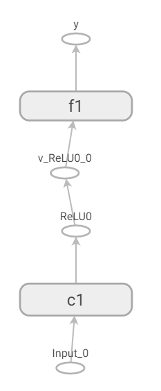
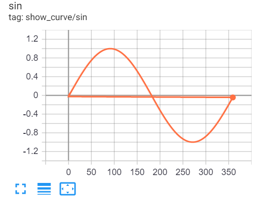
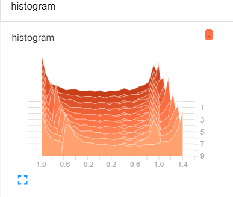

Show Graph by Tensorboard¶
TBGraphWriter¶
- class nnabla.experimental.tb_graph_writer.TBGraphWriter(log_dir='log_out', comment='', **kwargs)[source]¶
- This class is a wrapper of tensorboardX summary writer,
which enable nn.Variable can be visualized as a graph by tensorboard.
- Prerequisite:
Install tensorflow and tensorboardX, simply by the following commands:
pip install tensorflow pip install tensorboardX
Please refer to the following example to use this class:
Example:
import numpy as np import nnabla as nn import nnabla.functions as F import nnabla.parametric_functions as PF def show_a_graph(): try: from nnabla.experimental.tb_graph_writer import TBGraphWriter except Exception as e: print("please install tensorflow and tensorboardX at first.") raise e nn.clear_parameters() x = nn.Variable((2, 3, 4, 4)) with nn.parameter_scope('c1'): h = PF.convolution(x, 8, (3, 3), pad=(1, 1)) h = F.relu(PF.batch_normalization(h)) with nn.parameter_scope('f1'): y = PF.affine(h, 10) with TBGraphWriter(log_dir='log_out') as tb: tb.from_variable(y, output_name="y")
The corresponding graph can be visualized as the following:
Or, you may show scalar value or histogram of values along the increasing of iteration number as the following:
with TBGraphWriter(log_dir='log_out') as tb: values = [] for i in range(360): s = np.sin(i / 180.0 * np.pi) tb.add_scalar("show_curve/sin", s, i) values.append(s) nd_values = np.array(values) for i in range(10): tb.add_histogram("histogram", nd_values, i) nd_values += 0.05
It looks like:
- d
- 
This class writes a protobuf file to
log_dirspecified folder, thus, user should launch tensorboard to specify this folder:tensorboard --logdir=log_out
- Then, user may check graph in a web browser, by typing the address:
- See Also:
https://tensorboardx.readthedocs.io/en/latest/tensorboard.html
{kind=link}
{kind=link}
{kind=link}